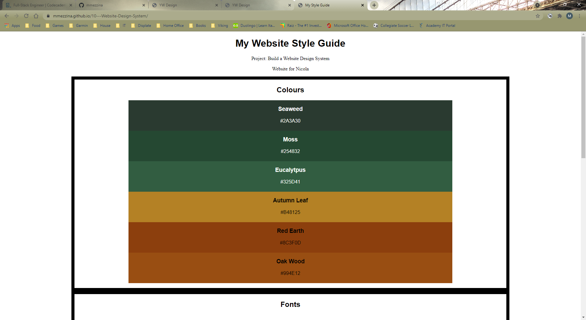
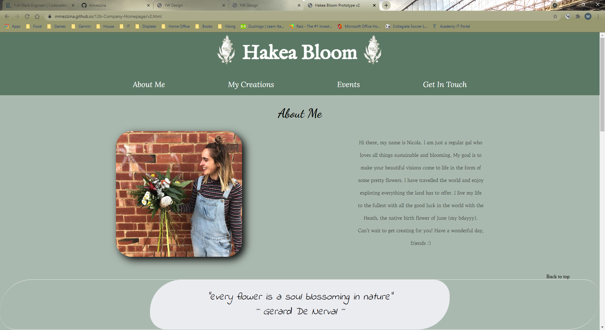
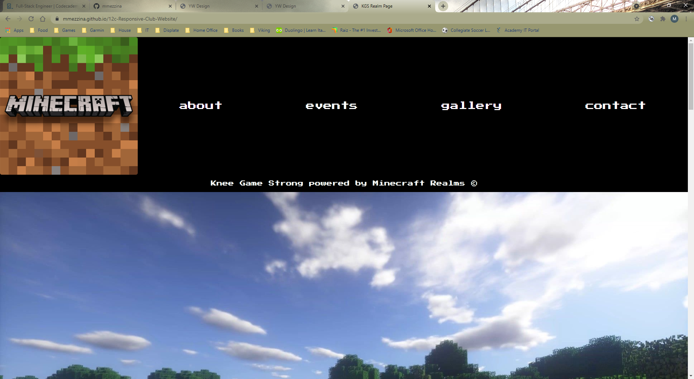

Projects

Hakea Bloom Style Guide
This project was created to outline potential design and formatting features for a florist called Hakea Bloom who is based in Perth, Western Australia. Given some brief instructions and guidelines by the business owner, Nicola, a basic design spec page was created.

Hakea Bloom Prototype (v1 & v2)
Following on from the design spec page, this project was undertaken using not only the design features outlined in the previous project, but also inspiration taken from other external sources.

Knee Game Strong Club Page
This project was created to show off a server on the popular video game, Minecraft. The page shows screenshots of different world aspects and gives the user the opportunity to get to know a little bit about the players